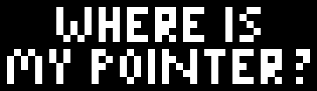
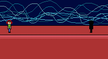

Hey! What's new?
Call a friend and look around for a mouse!
A brand new game called "Where's my pointer?" will be released in 29 November 2020. Bit Studio is suprising us once again.
Bitowsky on the stage? What could that mean?
Last time we recovered this animation. What could that mean?